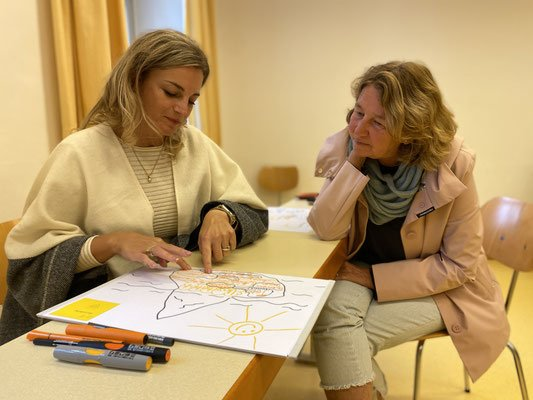
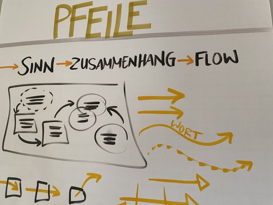
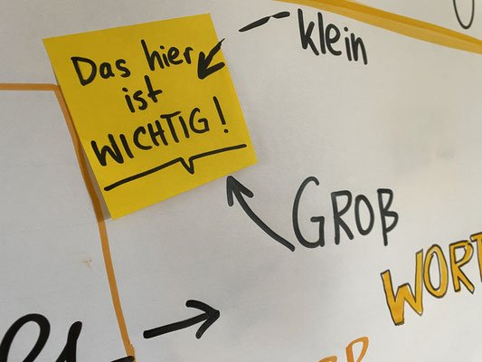
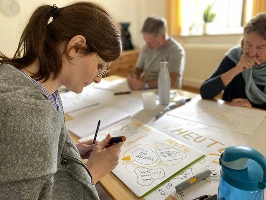
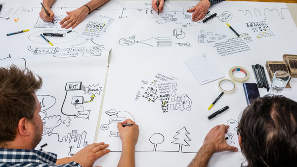

← Alle Projekte
Visualisierungsworkshop Freiburg VHS
„Jeder Mensch kann zeichnen – und dadurch sichtbar machen, was wirkt.“
In Freiburg gebe ich regelmäßig Workshops zu Visual Thinking und Graphic Recording. Die Teilnehmenden erleben, wie sie mit einfachen Strichen komplexe Ideen sichtbar machen können, und verlieren ihre Angst vor dem Zeichnen. Mit spielerischen Übungen, Praxisnähe und kreativen Methoden werden innere Potenziale freigesetzt – ein Beitrag zu Lernkultur, Kreativität und Empowerment in Teams.




